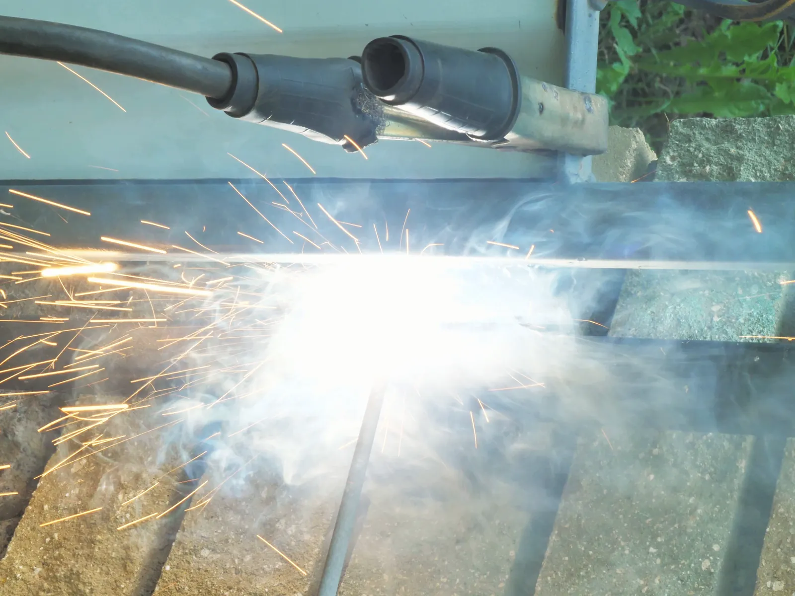
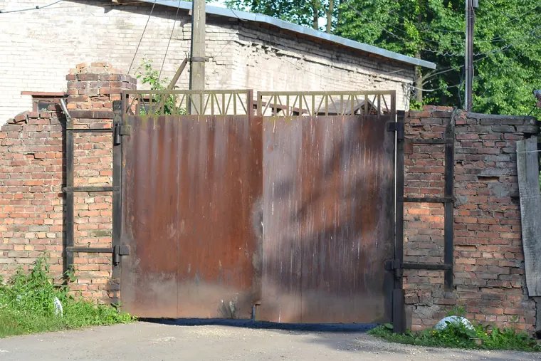
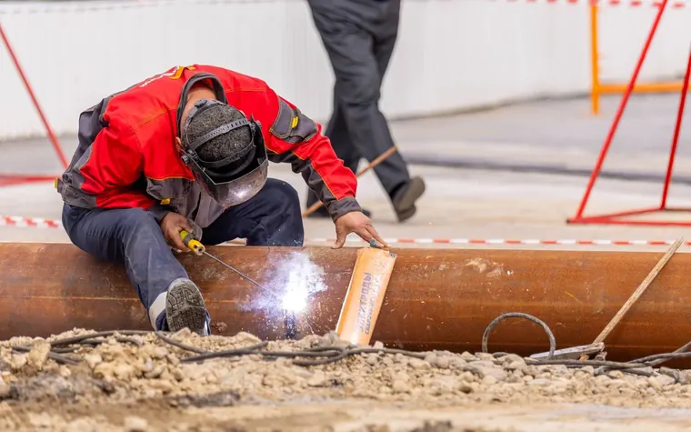
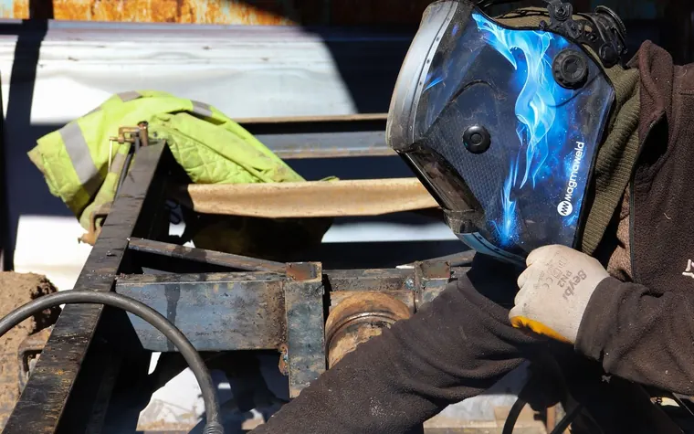
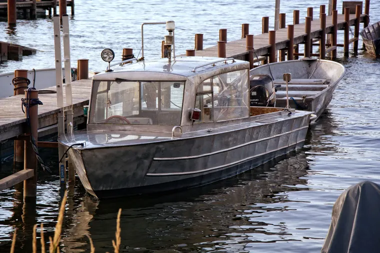

Home · Blog
Welding Tips and Guides for New Orleans Properties
At Big Easy Mobile Welders, we write practical guides on gates, railings, rust, marine work and more, based on the questions we hear on job sites around New Orleans.

We come to the jobWhat Is Our Newest Welding Guide for New Orleans Properties?
Our newest guide covers welding food-grade stainless steel in a New Orleans kitchen: what makes a weld sanitary, how to choose the filler metal and why passivation matters afterward. It is a practical read for restaurant owners and anyone running commercial food equipment.
How Do You Weld Food Grade Stainless Steel in New Orleans, LA?
Sanitary welds, filler and passivation for stainless steel in a New Orleans kitchen.
Read the GuideWhat Welding Questions Do Property Owners in New Orleans Ask?
These guides answer the questions we hear on job sites across New Orleans, from trailers and broken welds to galvanized steel, raised homes, hot work permits and rust. Browse the latest nine below, filter by topic in the sidebar, or page through all 58 guides.

How Do You Fix a Broken Weld Without a Welder in New Orleans, LA?
Safe temporary holds for a broken weld on a gate or fence, and the real repair.
Read the guide →What Kind of Welder Can You Use to Repair a Trailer in New Orleans, LA?
MIG, flux-cored and stick compared, plus the steps of a trailer repair.
Read the guide →
How Do You Stop Welds From Cracking in New Orleans, LA?
Why welds crack on gates, railings and frames, and how to spot a bad repair.
Read the guide →
Structural Steel Repair on Raised and Pier-Supported Homes in New Orleans, LA
Why repairs on raised homes center on the connections between piers, caps and beams.
Read the guide →
What to Know About Welding Galvanized Steel in New Orleans, LA
Removing the zinc coating before welding galvanized steel, and restoring it after.
Read the guide →
What to Do Before the Mobile Welder Arrives in New Orleans, LA
Four things to sort out before your appointment, from access to parking.
Read the guide →
Hot Work Permits and Fire Watch for Commercial Welding in New Orleans, LA
What a hot work permit and fire watch involve for commercial welding.
Read the guide →
Marine and Dockside Welding Keeps Waterfront Structures Strong in New Orleans, LA
How welding keeps docks, seawalls, pilings and boat lifts sound.
Read the guide →Protecting Welded Metal From Rust and Corrosion in New Orleans, LA
Why humidity and salt air rust welded steel, and the coatings that slow it.
Read the guide →Why Do New Orleans Properties Need Local Welding Advice and Repairs?
New Orleans humidity and salt air push unprotected welded steel toward rust and corrosion faster than most other climates in the country, and storms bend fences, gates and railings. Local advice accounts for that, so the metalwork on your property is built and repaired to last here.
Advice written for this climate, not a generic one.
Our guides cover protective coatings like hot-dip galvanizing and zinc-rich primers, storm damage repairs for bent fences and gates, and marine work on docks and seawalls.

Where Can You Get Hands-On Welding Help in New Orleans?
When a guide is not enough, our licensed and insured welders come to your home or business with a fully equipped mobile rig. We handle gate, fence, railing, pipe and window work plus custom fabrication on site across New Orleans and 11 nearby cities. Request a free estimate or call us, and we will take it from there.